Sunk (V-Sunk) Sandblasted In Steeled Finish (Modified Roman)
Memorial guide
Lettering
We offer many styles of lettering. In addition to a variety of fonts, we also offer a variety of techniques for carving lettering into stone. This involves different outline treatments as well as different processes for finishing the stone or panel area around lettering. Here are some samples that may help you with your selection.

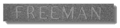
Frosted Outline (Double Outline) Letters in Polish (Sans Serif/Optima)

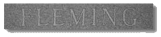
Frosted Outline (Double Outline) Letters in Polish (Modified Roman)

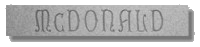
Sunk (V-Sunk) Sandblasted In Steeled Finish (Uncial Gothic)

Square Edge Raised Letters in a Straight Line Panel (Modified Classic Roman)

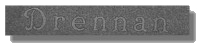
Frosted Outline (Double Outline) Letters in Polish (Custom Font/Hand-Drawn)

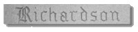
Sunk (V-Sunk) Sandblasted In Steeled Finish (Old English)

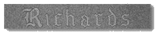
Frosted Outline (Double Outline) Letters in Polish (Old English)

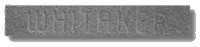
Sunk (Sandblasted) Into Polish (Vermarco)

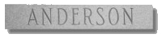
Sunk (V-Sunk) Sandblasted In Steeled Finish (Condensed Modified Roman)

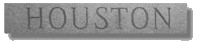
Sunk (V-Sunk) Sandblasted In Steeled Finish (Modified Roman)

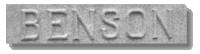
Round Edge Raised Letters in Relief (Custom Lettering/Hand-Drawn)

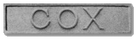
Round Edge Raised Letters in a Straight Line Panel (Modified Classic Roman)